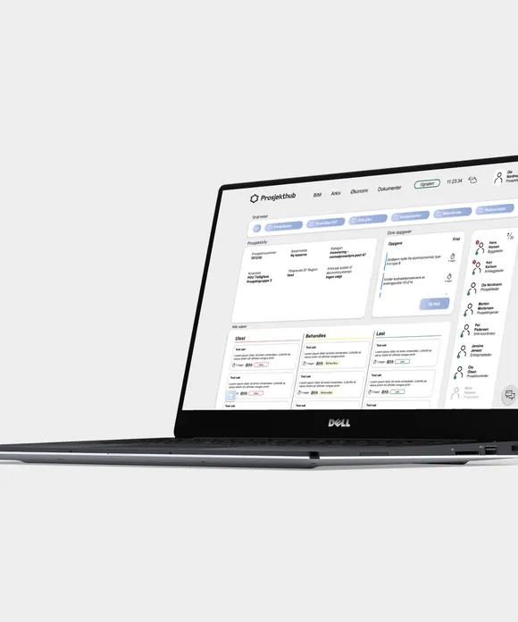
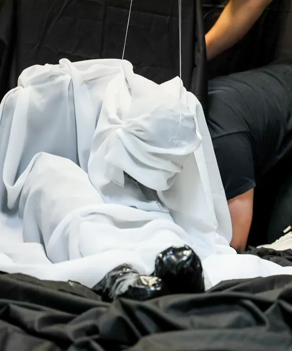
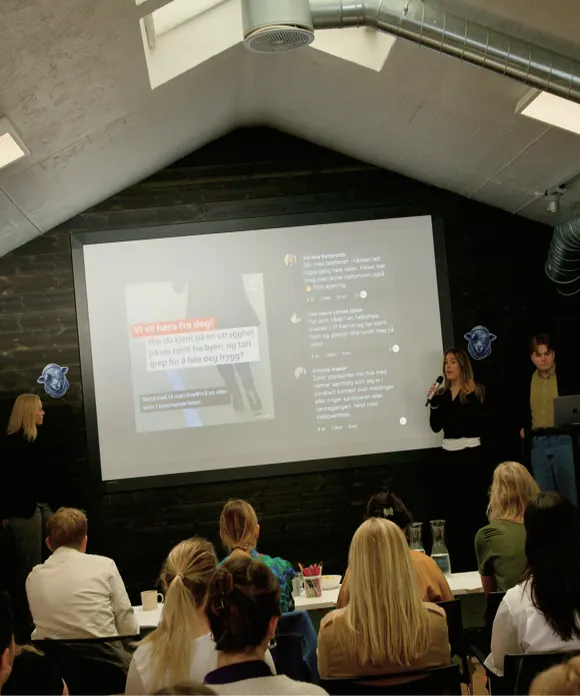
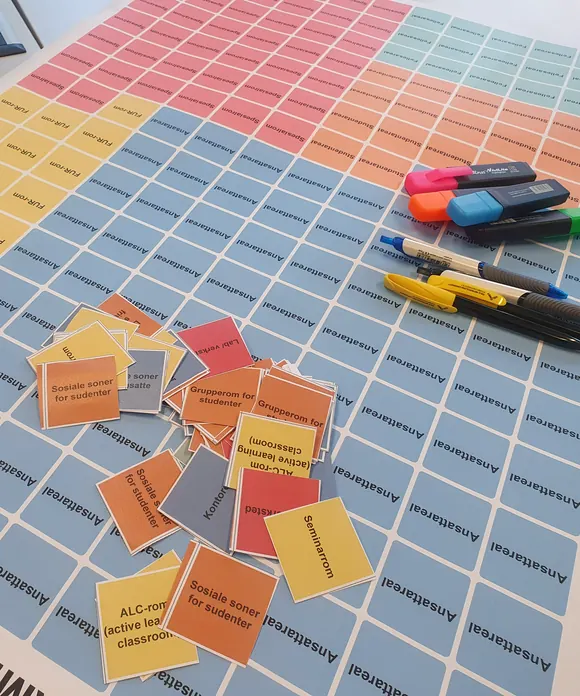
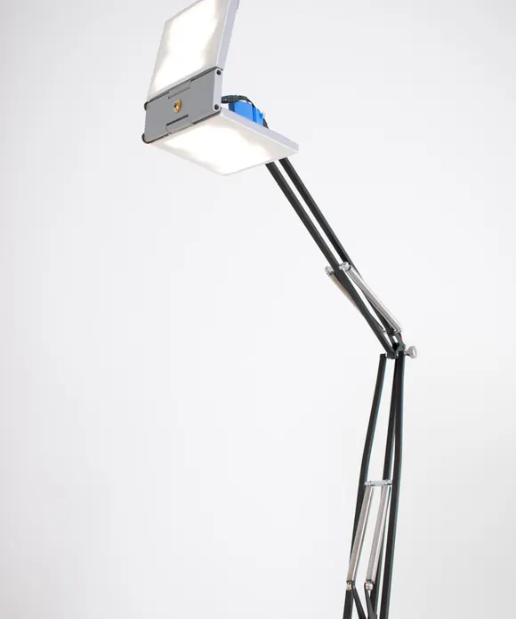

Mats
Ugland
Jeg er designer i skjæringspunktet mellom produktdesign, UX og interaksjonsdesign og brenner for faget i hele sin bredde. Med bachelor i produktdesign fra OsloMet og en pågående master i Informatikk: design, bruk og interaksjon ved UiO, har jeg en verktøykasse som spenner fra prototyping og illustrasjon til programmering og Figma. Det gjør at jeg beveger meg fritt mellom det fysiske og det digitale.
Arbeidserfaringen er like variert: campusutvikling ved OsloMet, sommerinternship hos Forsvarsbygg og flere år som studentpolitiker. Sistnevnte har lært meg hvordan godt design henger sammen med gode prosesser og medvirkning.
Prosjekter

Prosjekthub
Prototype av et rollebasert dashbord laget under et sommerinternship i Forsvarsbygg. Temaet var digitalisering av byggeplass og prosjektet kombinerer brukerintervjuer, befaringer og UX-design.
UX-design
“Snakk til meg”
Snakk til meg er en interaktiv installasjon laget i UiO-emnet Tangible Interaction, hvor en menneskestor dukke reagerer på besøkendes stemme gjennom en stepmotor og fiskesnører. Temaet var puls, og prosjektet kombinerer fysisk konstruksjon, mikroelektronikk og lyddesign.
Interaksjonsdesign
Politiet i lomma
Hva gjør du når du føler deg utrygg, men situasjonen ikke er alvorlig nok til å ringe politiet? Under UX-Cup-finalen hos Bekk designet vi "Trygg", en app som gir politiet en helt ny rolle i gråsonen mellom trygghet og fare. Fra idé til ferdig konsept på tre intense dager.
UX-design
Workshop for campusutvikling
En serie brukerinvolverende workshops gjennomført som del av OsloMets campusutviklings-plan, hvor jeg har bidratt til planlegging og gjennomføring sammen med et tverrfaglig team.
Brukermedvirkning
Den moderne pultlampen
Ampær er en sammenleggbar skrivebordslampe laget i skolefaget Kritisk refleksjon i designpraksis. Temaet var dårlig belysning i hjemmekontor under videomøter.
Produktdesign